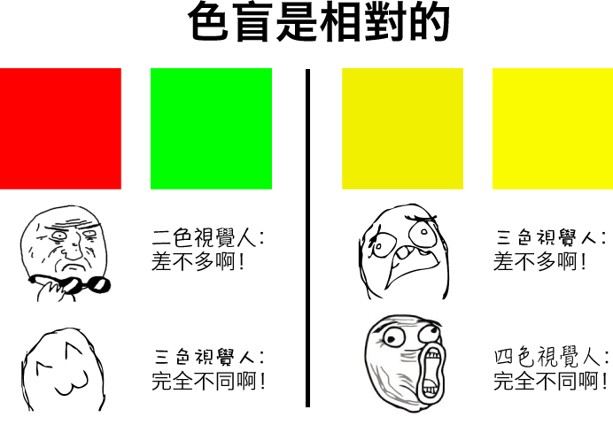
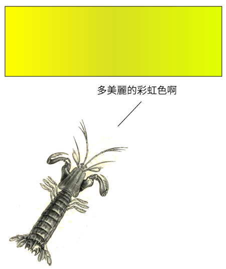
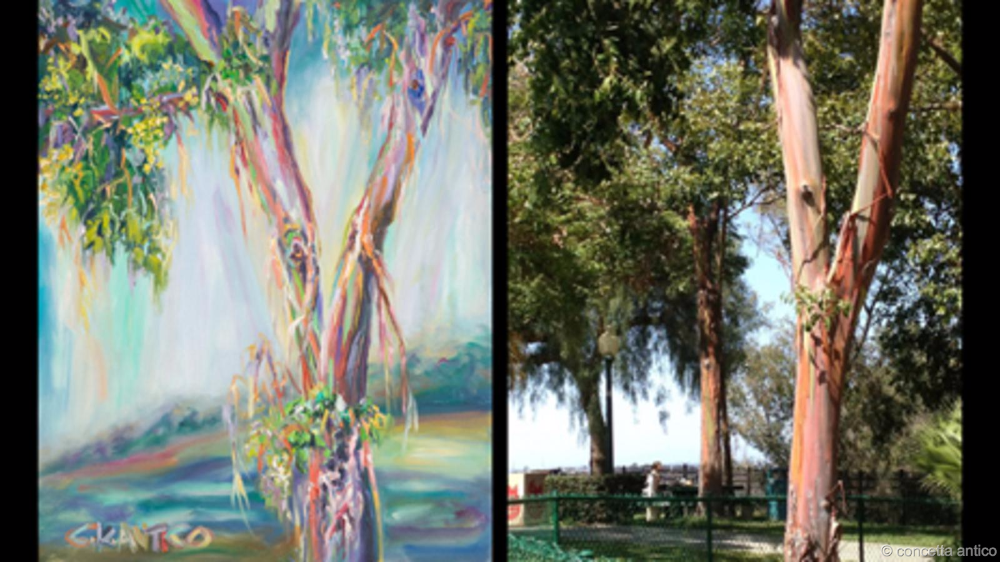

做數據可視化，繞不開的設計元素是「色」——顏色的色。
顏色是什麼？有人說，光有「三原色」，世間一切顏色，皆是這三原色組合而成。其實，光就是光，就是電磁波，只有波長、強弱之分。所謂顏色，是生物體神經系統決定的歸類，並不是光本身的特性。
其實我們都是色盲
大多數人有三種視覺細胞，分別對紅、綠、藍最爲敏感，對這些人而言，顏色就有三原色。大約8%的男性很難辨別紅綠：對他們來說，顏色只有二原色，一個是黃色（紅、綠都像黃色），一個是藍色。每三萬人之中，還有一個是單色視覺，對他們來說，只有亮暗之別。
大多數哺乳動物都是二色視覺，比如老虎獅子。人類有三色視覺，比他們強，不過跟昆蟲、爬行類相比，又遠遠不如。很多昆蟲都是四色視覺。四色視覺是什麼意思？就是它們眼中比我們多一種感光細胞，對人類來說相似的顏色（比方說深黃和淺黃），對蝴蝶來說是截然不同的顏色。

四色視覺，對大多數人來說只能靠想像了，不過，還有更強的，那就是皮皮蝦（瀨尿蝦）。多數人類有3種色覺細胞，昆蟲有4種，少數蝴蝶有5種，而皮皮蝦有16種。是的，你沒看錯，16種。

能看見一億種顏色的人
前面說，四色視覺，對大多數人來說只能靠想像了。這樣說是因爲，有極個別人天生有四色視覺。比如澳大利亞藝術家 Concetta Antico 。三色視覺的人能分辨幾百萬種顏色。她能分辨一億種。經過研究，她的第四種「原色」是介於紅色和黃色之間的顏色。換句話說，對大多數人來說，紅色、橙色、黃色比較相似，對她來說，則是截然不同。
Antico的畫作與景物照片的對比：

(圖片來自BBC和畫作者本人：http://www.bbc.com/future/story/20140905-the-women-with-super-human-vision)
爲二色視覺的人做設計
三色視覺佔人口大多數，物件、圖畫的設計，大多是爲三色視覺設計。不過，只要我們稍加留意，便能照顧到二色視覺者的需求。而且，這樣的設計，對於三色、四色視覺的人，也會更易理解、使用。
技巧1 - 避免依賴色調表意（而是輔以形狀、紋理等元素）

模擬紅綠二色視覺中的行人交通燈。交通燈通常用綠、紅區分行、止，但如果信號加上形狀，即使路人不能辨認紅綠，也能通過辨認輪廓來識別信號。
源圖來源：https://commons.wikimedia.org/wiki/File:Ampel-Goettingen-14.jpg
技巧2 - 避免依賴明度表意
二色視覺、單色視覺的人色覺細胞類別比較少，因此對明度變化也沒那麼敏感。如果要使用明度區分（表達連續數量的常見手法），儘量使用明顯的明度差異。
技巧3 - 發佈前預覽

Adobe Illustrator 有「色盲模式」，可以在發佈前預覽在二色視覺者眼中的設計效果。
其中，Protanopia 是指沒有紅色感光細胞，Deuteranopia 是指沒有綠色感光細胞，臨牀症狀很相似，都是不易辨別紅綠。
如果足夠自信，甚至可以直接轉成灰度來看。如果一個設計轉成灰度圖都沒問題，則各類色覺的人都不會有困難。
我也嘗試做過一個實時的「非常規色覺模擬器」：rgbx.shux.in，目前可以實時模擬二色視覺眼中的世界（在桌面機上支持Firefox和Chrome，Android上支持Firefox）。
延伸閱讀
【色彩感知】
Wikipedia: Color vision
Color Vision by Peter Gouras
【非常規色覺】
Wikipedia: Color Blindness
Tips for Designing for Colorblind Users